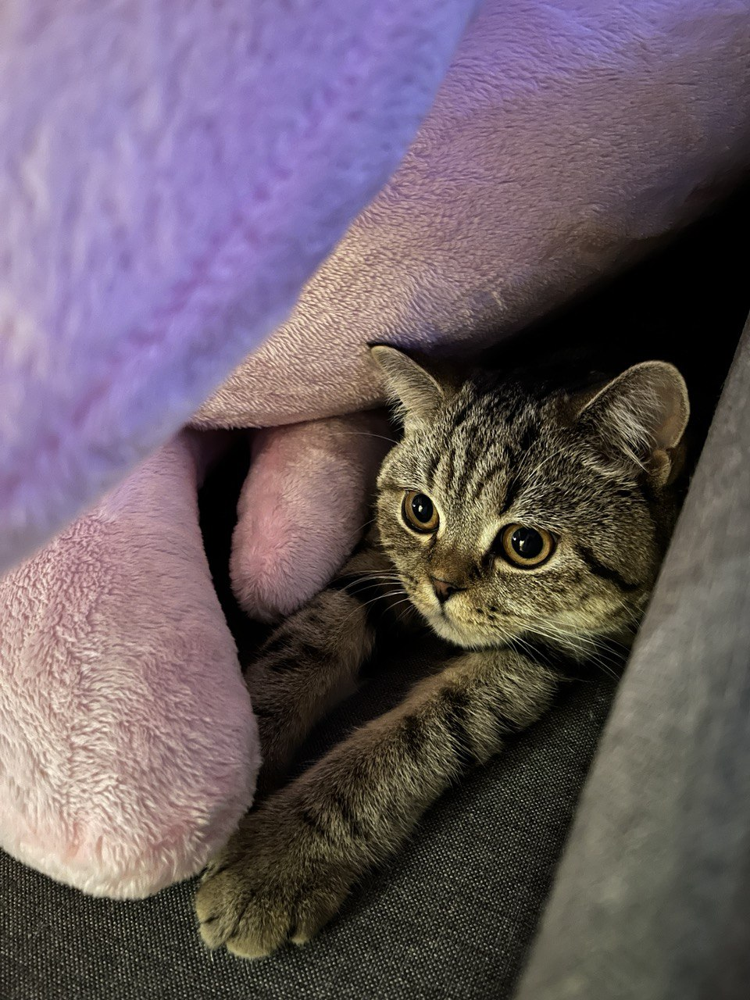

Історія кішки з кличкою Хлоя
З'явилася на світ ця гарнюня 07.08.2024 року, і навіть не у являла що у неї з'виться два раби які будуть давати їй смачно поїсти та чухати за вушком .
С початку вела себе я янгол ні шкоди ні чого, але коли зрозуміла що вона тут головна і біднабрала в масі почалося тигидиг по ночам та перевернуті вазони з подертими шпалерами.
В неї було все і своя елітна лежанка на якій вона лежала три рази і забила на неї, кожане крісло їй більш до душі, і персональна когтеточка тому що шпалери коштують дорожче.
Одного разу взагалі залишила мене без інтернету перевернувши вазу з квітами на роутер який дуже швитко потонув, а ле їй було все рвіно тому що треба було погризти квіти які упали. Шаленіє від вушних паличок, як що їх знаходить вони опиняються по всій квартирі розідрані в пух та прах. Дуже полюбляє з ранку кусати за носа щоб я прокинувся за годину до будтльника і на кормив її без цього ні як, сон сном а поїсти за графіком. З появою цієї кішки жити стало набагато веселіше завжди якийсь двіж вдома.